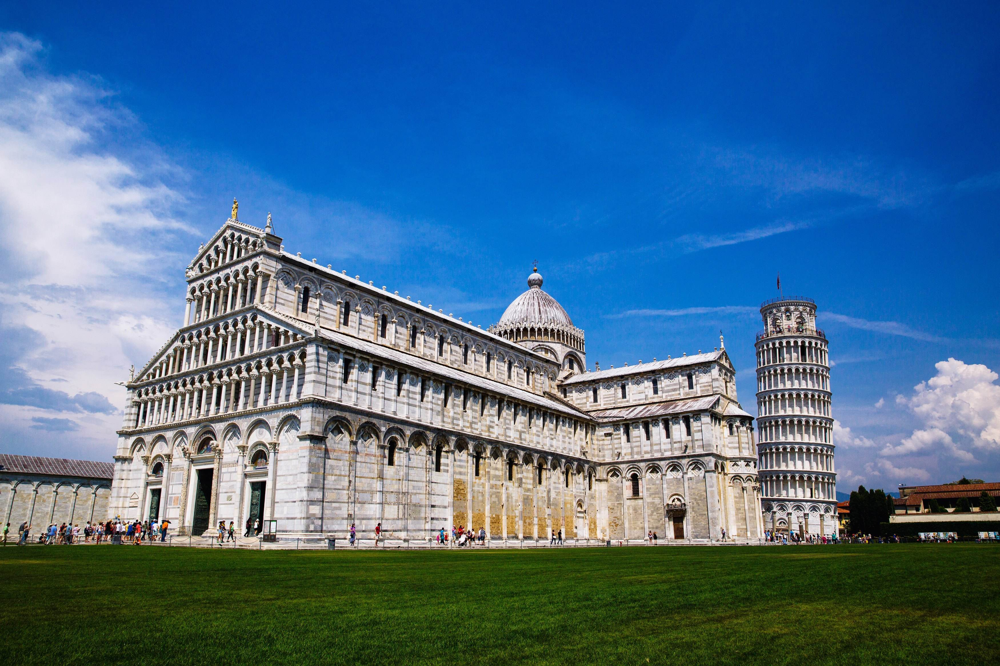

Romanesque Architecture
Romanesque architecture, prevalent from the 10th to the 12th centuries in Europe, is characterized by its robust construction, thick walls, and distinctive rounded arches. This architectural style emerged as a response to the need for durable and monumental structures, primarily churches and cathedrals, during the medieval period.Key Features:
Romanesque buildings are known for their sturdy construction, utilizing massive stone walls and rounded arches to support the weight of the structure. Barrel vaults and groin vaults were commonly employed to create expansive interior spaces, while towers and bell towers served as prominent features on the exterior. Decorative elements such as carved stone capitals and sculpted reliefs adorned doorways and facades, adding artistic flourishes to the otherwise utilitarian architecture.Prominent Examples:
Speyer Cathedral in Germany, built in the 11th century, exemplifies Romanesque architecture with its imposing facade, twin towers, and vaulted interior. Durham Cathedral in England, constructed during the late 11th and early 12th centuries, showcases the monumental scale and intricate detailing characteristic of the style. These and other Romanesque structures across Europe continue to captivate visitors with their historical significance and architectural grandeur.Legacy:
Romanesque architecture laid the foundation for subsequent architectural styles, influencing the development of Gothic architecture in particular. Its emphasis on solidity and simplicity, combined with innovative engineering techniques, set the stage for the soaring cathedrals and elaborate ornamentation of the Gothic period. Despite the evolution of architectural styles over time, Romanesque buildings remain enduring symbols of medieval craftsmanship and religious devotion.